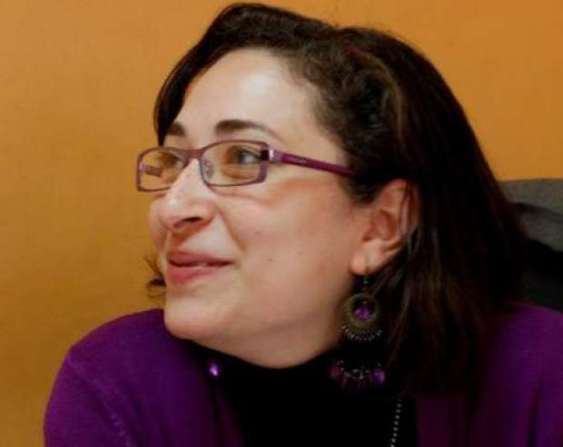
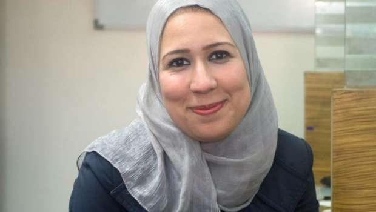

أحدث الأخبار
- المالية تعفي المطاعم غير السياحية من ضريبة القيمة المضافة بشروط
- "القضاء الإداري" يلزم الجامعة الأمريكية بتحصيل مصروفاتها بالجنيه المصري
- البورصة ترتفع بنسبة 0.52% في نهاية التعاملات
- إعادة فتح موانىء السويس بعد تحسن الأحوال الجوية
- محام: حفظ التحقيقات مع منى مينا في اتهامها بنشر أخبار كاذبة
- نجوى سالم .. كوميديانة انتهت حياتها بمأساة
- الأرصاد: طقس مائل للدفء الاثنين.. والعظمى في القاهرة 22
- مع إعداد الموازنة الجديدة.. ماذا يقدم لك كل "مليار جنيه" زيادة؟
المرأة في الصحافة.. تزور كرسي الرئاسة كل سنة مرة
نسخة من كتاب "كفاح الصحفيات المصريات" - أصوات مصرية
تزور المرأة الصحفية كرسي الرئاسة كل سنة مرة، بموجب مبادرات متفرقة تتخذها بعض الصحف؛ احتفاءً بالنساء في عيد الأم أو اليوم العالمي للمرأة، حيث تُنصّب امرأة أو أكثر لتولي مهام القيادة لمدة يوم واحد.
ورغم ما تستحقه هذه المبادرات من إشادة ورفع القبعة لمنحها النساء الفرصة للجلوس على كرسي رئيس التحرير أو مدير التحرير أو حتى رئيس القسم، إلا أنها تكشف عن غيابهن عن هذه المناصب القيادية بأغلب المؤسسات الصحفية باقي أيام السنة.
* مجلس تحرير نسائي بجريدة "المصري اليوم"
ومن أحدث تلك التجارب تجربة الزميلة "المصري اليوم"، والتي قررت تولي العنصر النسائي مسؤولية اجتماع مجلس التحرير اليومي للجريدة احتفالا باليوم العالمي للمرأة والذي يوافق 8 مارس من كل عام.
وبدأت التجربة بمزحة من أحد رؤساء الأقسام بالجريدة، وقرر محمد السيد صالح رئيس تحرير الجريدة تحويلها إلى واقع، وبالفعل اقتصر الاجتماع على عدد من الصحفيات ممثلات عن كل قسم، وتولت كل منهن منصب رئيس القسم الذي تنتمي إليه على مدار اليوم.
وقالت صفاء صالح، نائب رئيس قسم التحقيقات بالجريدة، والتي اختيرت لتكون مدير التحرير لمدة يوم واحد، إن "المرأة الصحفية تحَارب بشدة من زملائها الذكور الذين لا يقبلون بأن تديرهم امرأة، حتى وإن كانت تفوقهم كفاءة وخبرة، ومن زميلاتها النساء كذلك اللاتي يغرن بشدة من نجاحها وتفوقها عليهن".

الصحفية صفاء صالح
وترى صفاء أن المجتمع المصري يعود بظهره فيما يخص نظرته للمرأة، قائلة "في ردة ثقافية حصلت في المجتمع ونظرته للمرأة اللي انحدرت عما كانت عليه في الخمسينيات والستينيات".
وأشارت إلى أنه في تلك السنوات وصلت كثير من النساء لمنصب رئيس التحرير مثل أمينة السعيد التي رأست تحرير مجلتي "حواء" و"المصور" ومجلس إدارة دار الهلال وكانت كذلك عضوة في مجلس الشورى، وفريدة النقاش التي تولت رئاسة تحرير جريدة الأهالي وغيرهن، ولم يكن وصول المرأة لذلك المنصب وقتها متقصر على المجلات النسائية.
وقالت إن المشكلة ليست مقتصرة على مجال الصحافة وتمتد لمختلف المجالات، موضحة "في أي مجال هتلاقي الراجل مش متقبل أن مديرته تكون ست وياخد منها الأوامر، ده حتى لو راكب ميكروباص وواحدة قالت له متدخنش لو سمحت مش هيسمع كلامها، على عكس لو راجل اللي قاله يعمل كده".
وأشارت إلى أنه رغم التعاون الشديد من رؤساء الأقسام الذين تولت صحفيات الجريدة مكانهم خلال تجربة الأمس واحتفائهم بالصحفيات، إلا أنها لاحظت نظرات عدم رضا في عيون بعض من زملائها الذكور الذين لم يرحبوا بأن تملي عليهم الأوامر امرأة حتى ولو ليوم واحد.
وترى صفاء أنه على الرغم من تلك الردة الثقافية في المجتمع، إلا أن هناك تغييرا بطيئا يحدث في مختلف المجالات ومن بينها صاحبة الجلالة، قائلة إن هذا التغيير فرضته النساء باقتحامهن لمجالات احتكرها الذكور لسنوات طويلة، وإثباتهن لكفاءتهن وقدراتهن.
وأشارت إلى أن مبادرة "المصري اليوم" والمبادرات المماثلة تدعم هذا التغيير، كما أشارت إلى وجود أقسام متعددة بالجريدة ترأسها صحفيات بالفعل.
* رئيسة تحرير امرأة بجريدة "الشروق" في عيد الأم
وبالمثل تعول الصحفية صفاء عصام الدين على الأجيال الجديدة من الصحفيات، وتأمل أن يكن أكثر حظا وتتاح لهن الفرص.
وتولت الصحفية البرلمانية صفاء عصام الدين منصب رئيس تحرير جريدة الشروق عام 2013 لمدة يوم واحد بمناسبة عيد الأم، وكانت حينها أصغر أم بالجريدة.

الصحفية صفاء عصام الدين
وتسترجع صفاء تفاصيل تلك التجربة التي وصفتها بأنها كانت بمثابة "رحلة" فتحت عينيها على المراحل المختلفة التي تمر بها الجريدة حتى تصل إلى أيادي القراء.
وقالت إنها أدارت اجتماعات التحرير خلال ذلك اليوم واختارت العناويين والصور وأشرفت على رسم صفحات الجريدة واختيار المانشيتات، وكان رئيس التحرير معها خطوة بخطوة.
وأشارت إلى أنها اعتبرت تلك التجربة بمثابة تقدير على المجهود الذي بذلته خلال ذلك العام منذ ولادة طفلها، مضيفة "كنت بحاول طول السنة دي أوازن بين المسؤولية الجديدة لتربية طفل وبين اني أدي شغلي ما يستحقه على قدر استطاعتي".
وترى صفاء أن مهنة الصحافة مهنة ذكورية لا تسمح للنساء بالوصول للقيادة إلا في أضيق الحدود، قائلة "المهنة بيسيطر عليها الذكور أصحاب القرار، وكان بتقال لنا في وشنا ليه صالة التحرير كلها بنات مع إن البنات دول عمرهم ما خذلوا رؤساءهم ولا القراء، وفي الأيام الحساسة زي الانتخابات أو الثورة أثتبوا انهم أد المسؤولية".
وأضافت أن البعض يرفض ترقية النساء في مهنة الصحافة خوفا من أن تتزوج وتنجب فتقصر في عملها.
وتابعت صفاء أن الاتجاه العام يؤكد عكس ذلك وقدرة المرأة على القيام بالدورين معا بكفاءة. وترى أن الأجيال القادمة سيكون لها حظ أفضل وفرص أكبر للترقي خاصة مع التحول شبه الكامل للصحافة الإلكترونية.
* جريدة "البورصة" ترأس تحريرها امرأة
الصحفية أسماء نبيل -رئيس قسم البنوك بالجريدة- خاضت تجربة مماثلة حين اختيرت لتتولى منصب رئيس التحرير للجريدة في عددها الصادر يوم الأحد 5 مارس بمناسبة يوم المرأة العالمي هذا العام، وقالت إنها سعدت جدا بتقدير الإدارة ورئيس التحرير لعملها ولم تكن تتوقع اختيارها لمثل هذه التجربة.

الصحفية أسماء نبيل
وتصف تجربتها في تولي رئاسة التحرير بأنها كانت تجربة سلسة وتعاون معها الجميع الذكور قبل الإناث.
ولا ترى أسماء أن هناك من يمنع المرأة الصحفية من الوصول للمناصب القيادية، قائلة "في ستات كتير وصلوا لمنصب مدير تحرير ورئيس تحرير وفيه ستات السنة دي مترشحة كمان لمنصب نقيب الصحفيين".
وأضافت أن الكفاءة هي التي تفرض نفسها بغض النظر عن النوع أو العقبات التي يمكن تقف أمام الشخص.


{kind=link}
تعليقات الفيسبوك